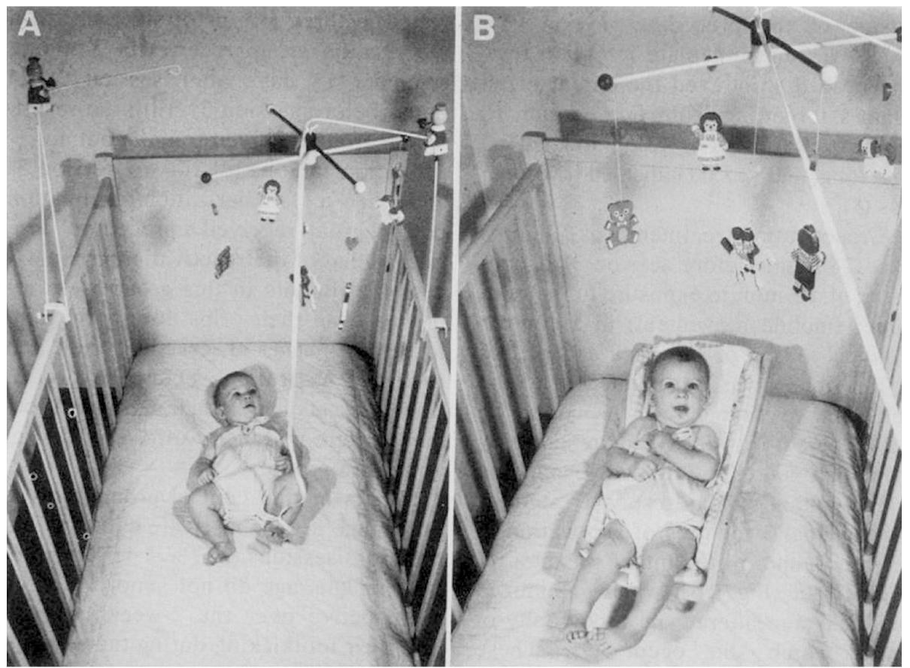

虽然小婴儿看上去对身边的世界一无所知，但事实上记忆和关注都是从很早的时候就开始发挥功能了。非常小的婴儿（6周之前）可能很难刻意地用眼神追随物体，但即便是新生儿也可以关注物体并且看到完整的视觉画面（而不仅仅是一团团的颜色和光线）。非常小的婴儿喜欢盯着有很多视觉反差的画面看。例如，他们喜欢盯着黑白相间的画面看，例如国际象棋的棋盘。正因为这个原因，有些婴儿床上的悬挂玩具会采用黑白相间的图案。一种可能性是，有着明暗最强反差的视觉画面可以刺激大脑的视觉系统，提高视觉能力。边缘检测和动态检测是视觉工作的核心。事实上，有时候小一点的婴儿可能很难停止关注某些物体——所谓的“眼睛粘上去了”。婴儿不能移动视线时，甚至有可能会哭。哭通常能解决问题，因为婴儿会被抱起来或移动，这时注视就会被打断。
关于早期记忆和关注的一个很好的例子来自一些著名的实验，这些实验利用了婴儿床上的悬挂玩具。当婴儿仰面躺在床中时，会花很多时间踢腿。为了创造实验条件，实验员将丝带绑在了婴儿的脚踝上（见图3）。起初，丝带只是系在了架子上，所以踢腿不会带来任何影响。一旦这个踢腿的“基准”速度被获取后，实验员便将丝带绑在了一个有趣的悬挂玩具上。这个玩具会晃动并发出音乐声。婴儿非常快地学到了，提高踢腿速度会使玩具动起来。几天之后，婴儿被放回到有着同样玩具的床内。他们的踢腿速度被再次测量。尽管这次的悬挂玩具没有因踢腿而晃动，相比基准速度，3个月大的婴儿仍旧会踢得更快。这意味着，他们能够保留关于因果关系的记忆。

图3 利用床上的悬挂玩具来测试婴儿的记忆
实际上，额外的踢腿说明记忆仍然存在，可以持续长达两周的时间。如果这种关联的“提示”再次出现（例如在将丝带绑上婴儿的脚踝之前，短暂地晃动悬挂玩具），这些小婴儿的记忆可以保持长达一个月。在悬挂玩具之类的实验场景中，“学习事件”（即通过踢腿来晃动悬挂玩具）是一个一次性的事件。婴儿只体验到一次，但是却学到了并且能记得住。在日常生活中，婴儿当然每天都会体验到关联或因果关系。因此婴儿的记忆可能比实验中表现出的更好。
关于早期记忆的持续，美国的一个研究团队做了一个非常具有说服力的实验。曾有一批儿童在6个月大的时候参与过一个声音定位实验，这个研究团队决定在他们两岁半的时候再将他们召回。在声音定位实验中，这些6个月大的婴儿曾被要求在黑暗中去抓一个会咯咯作响的大鸟玩偶 [2] 。两年后，这些儿童回到了同一个实验室，见到了同一位女性实验员，看到了一些玩具，包括大鸟。然后他们又要在黑暗中摸索。这些儿童对他们6个月大时的体验展现出了清晰的“内隐”记忆。对比其他在6个月大时没有这项体验的两岁半儿童，他们在抓大鸟时明显快很多，而且更准确。事实上，如果给他们一点点早期记忆的“提示”（在进入黑暗之前的半个小时，给他们听3秒钟的咯咯声），这些儿童在黑暗中抓取得还会更快。
这很好地证明了，长期记忆的形成最早是从6个月就开始的。和成人一样，如果有一些提示或线索，儿童在记忆任务中会发挥得更好。另一个表明内隐记忆存在的事实是，多数两岁半的儿童并没有因“在黑暗中摸索”而感到不适。相反，超过一半的对照组中的儿童（他们在6个月大的时候没有在黑暗中摸索过）并不喜欢坐在黑暗之中，并且会在实验结束前就要求实验停止。